01
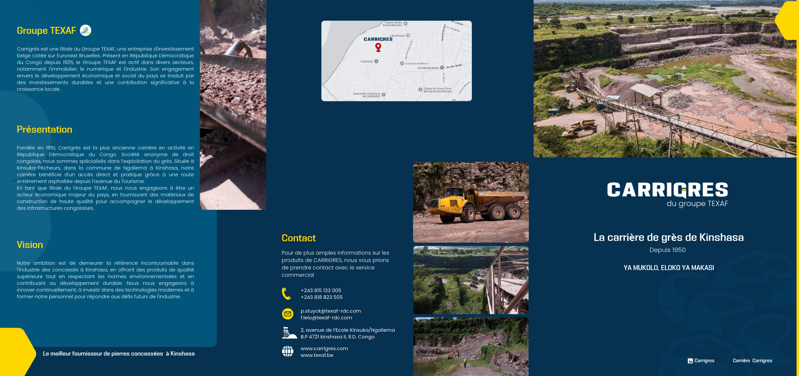
BROCHURE / COMMUNICATIONCarrigrès
Communication digitale, refonte web, campagnes et visibilité.
Stratégie. Créativité. Innovation.
Découvrir mes réalisations ↘Communication, design, expériences numériques et systèmes intelligents : j'aime les projets qui exigent de penser autant que de créer.
Une sélection de projets où se croisent stratégie, création et conception de solutions. Chaque réalisation indique clairement mon rôle et son état d'avancement.

BROCHURE / COMMUNICATIONCommunication digitale, refonte web, campagnes et visibilité.
Direction visuelle et création éditoriale pour une marque de roses stabilisées.
Voir les publications ↗Cockpit de gestion multi-projets, clients et opérations. Produit en développement.
Plateforme d'agents IA spécialisés, conçue autour d'objectifs mesurables.
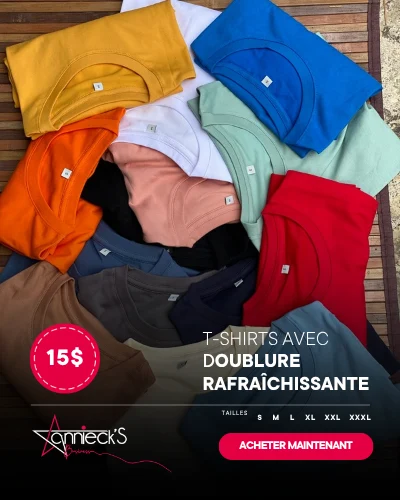
MODE / E-COMMERCE / CONTENUAgence indépendante : communication, marketing, web et automatisation.
Édition, identité et supports de marque : quelques autres pièces tirées de mes archives de création.
Les projets numériques en développement sont représentés par des compositions éditoriales, et non des captures d'interface. Les documents consultables restent la propriété de leurs auteurs et commanditaires respectifs.
Des identités visuelles aux supports imprimés, des campagnes aux exercices de création : chaque pièce a son langage, son contexte et sa fonction.
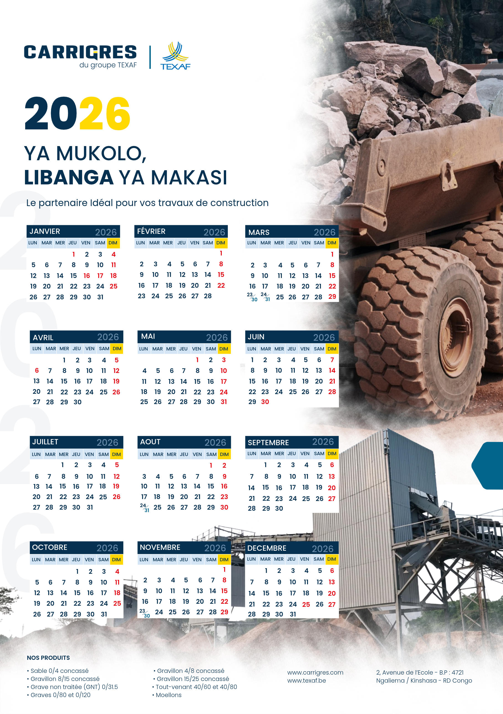

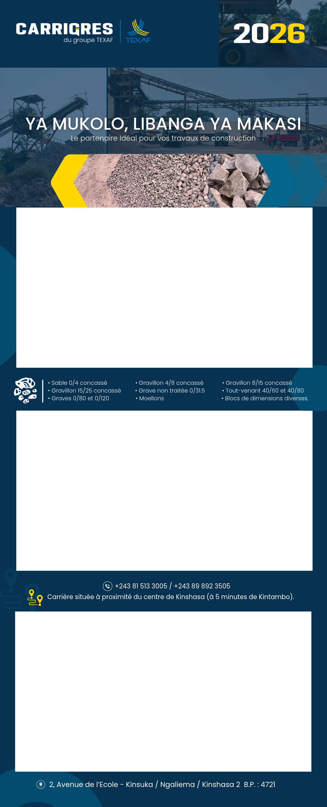
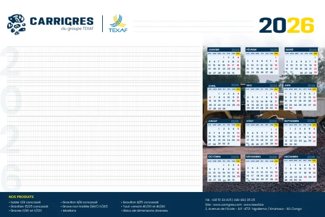
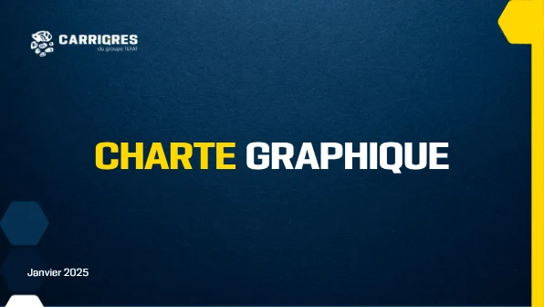
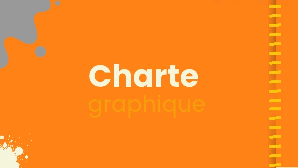
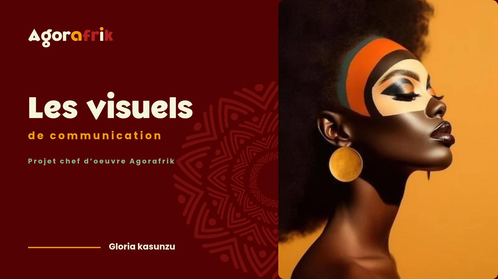
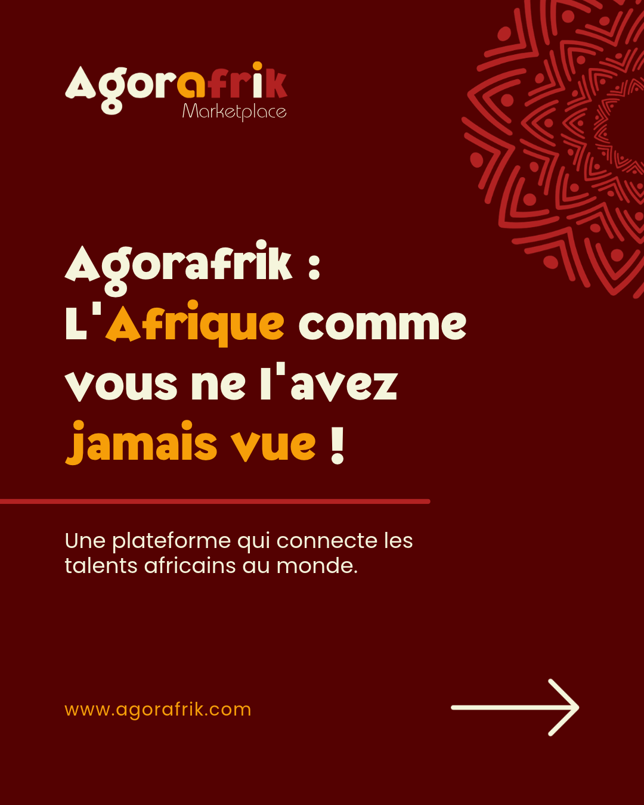
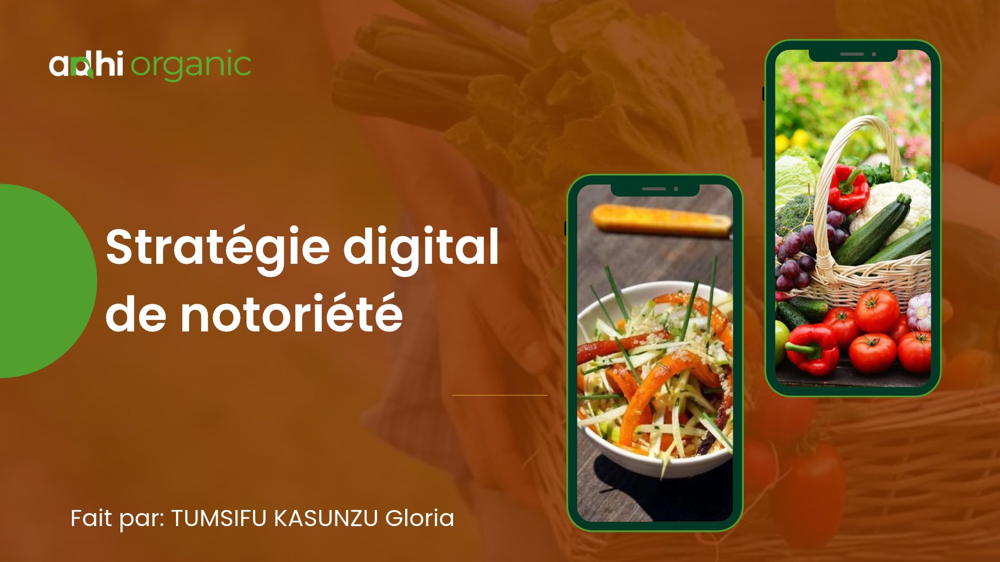
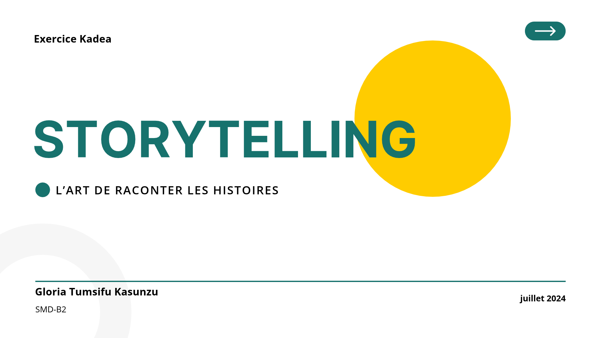
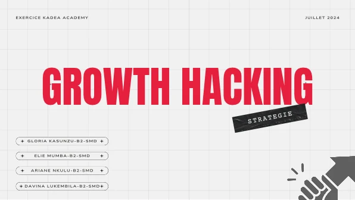
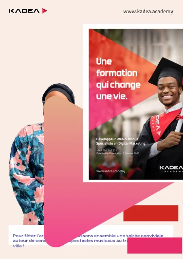
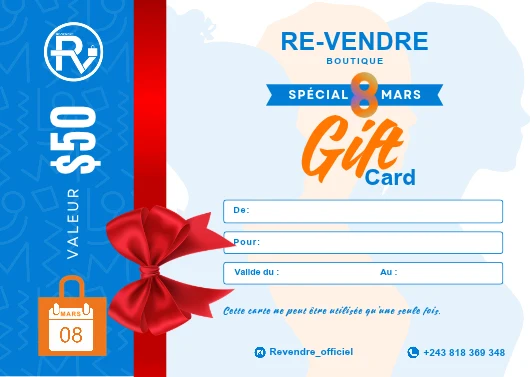
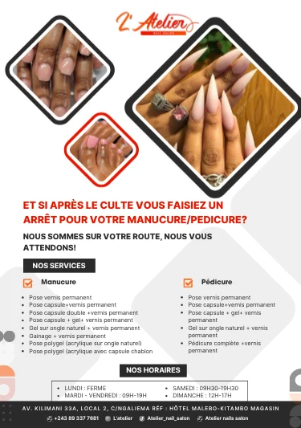
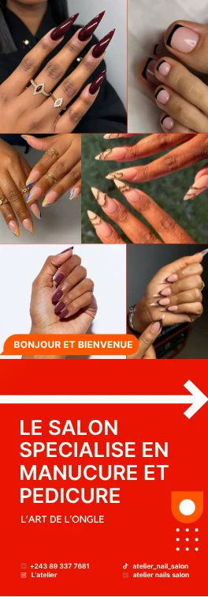
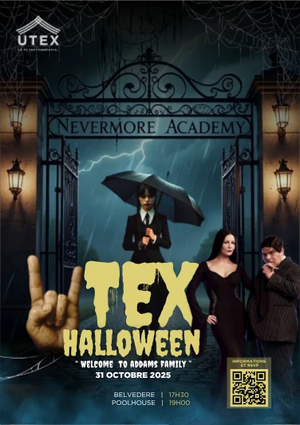
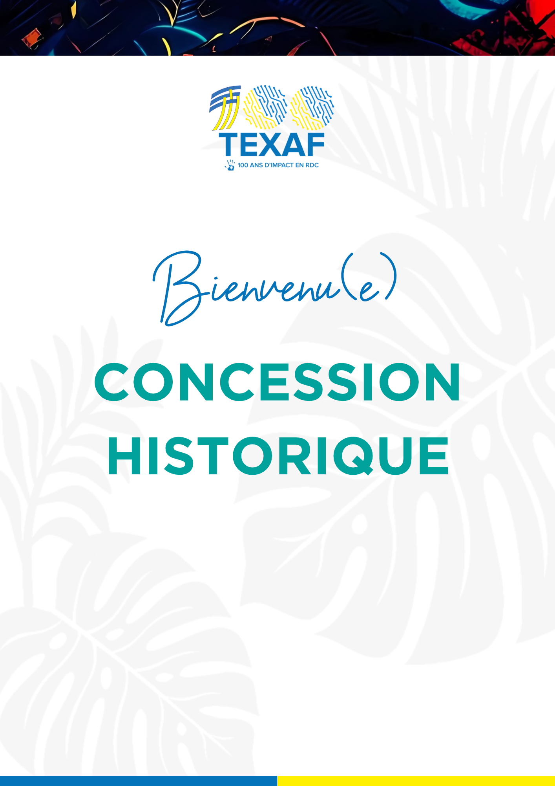
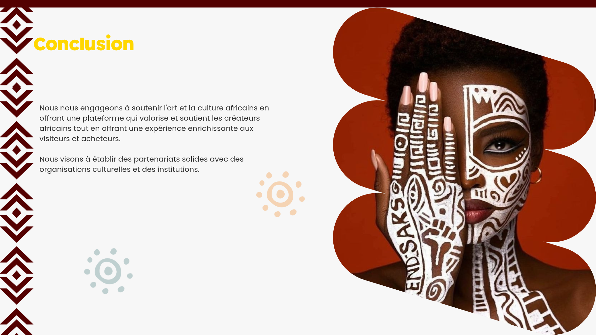
Des sites pensés pour répondre à un objectif réel : visibilité, clarté de l'offre et expérience de navigation.
Refonte et optimisation du site WordPress, visibilité SEO et présentation de l'offre.
Direction artistique et conception du site de mon agence. Projet en évolution.
Projet de site web pour une initiative portée par ma sœur. Le domaine affiche actuellement une page d'attente.
Je suis Gloria, une professionnelle de la communication qui aime aussi concevoir des produits et construire des systèmes.
Formée en sciences politiques et relations internationales, puis en marketing digital, j'ai travaillé entre groupe industriel, suivi commercial et projets indépendants à Kinshasa. Ce parcours nourrit une approche à la fois analytique, humaine et créative.
J'aime comprendre les besoins réels, trouver une direction juste et la traduire en livrables utiles — du contenu à l'interface d'un outil métier.
Impressions vidéo Facebook · Carrigrès
ThruPlays sur une campagne vidéo
Impressions organiques sur Google
Abonnés LinkedIn créés organiquement
Communication, produits digitaux et automatisations
Suivi commercial, CRM et coordination
Communication digitale, web et campagnes
Certification marketing digital · Grande distinction
Pour une opportunité professionnelle, une mission ou une collaboration, retrouvons-nous sur LinkedIn.
Me contacter sur LinkedIn ↗